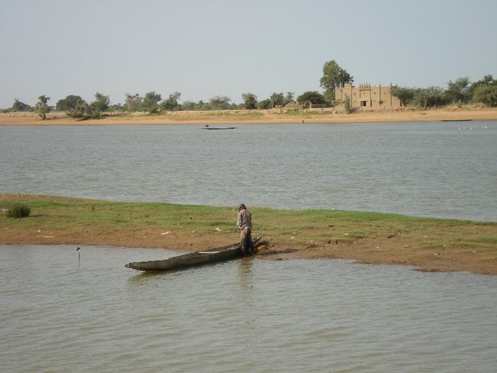

<p>Flashcards</p>  

	<p>q1</p>
	<iframe class="etsXML" width="1000" height="650" scrolling="no" frameborder="false" src="flashcards.html#q01" id="q01" data="xml/m3-3-1.xml"></iframe>
	<p>q2</p>
	<iframe class="etsXML" width="1000" height="650" scrolling="no" frameborder="false" src="flashcards.html#q02" id="q02" data="xml/m3-3-2.xml"></iframe>
	<p>q3</p>
	<iframe class="etsXML" width="1000" height="650" scrolling="no" frameborder="false" src="flashcards.html#q03" id="q03" data="xml/m3-3-3.xml"></iframe>
	<p>q4</p>
	<iframe class="etsXML" width="1000" height="650" scrolling="no" frameborder="false" src="flashcards.html#q04" id="q04" data="xml/m3-3-4.xml"></iframe>
	<p>q5</p>
	<iframe class="etsXML" width="1000" height="650" scrolling="no" frameborder="false" src="flashcards.html#q05" id="q05" data="xml/m3-3-5.xml"></iframe>
	<p>q6</p>
	<iframe class="etsXML" width="1000" height="650" scrolling="no" frameborder="false" src="flashcards.html#q06" id="q06" data="xml/m3-3-6.xml"></iframe>
	
	<p>Niger -- Photo Cr&eacute;dits : Cr&eacute;dits : L. Piron-Palliser, Mairie de Paris</p>
